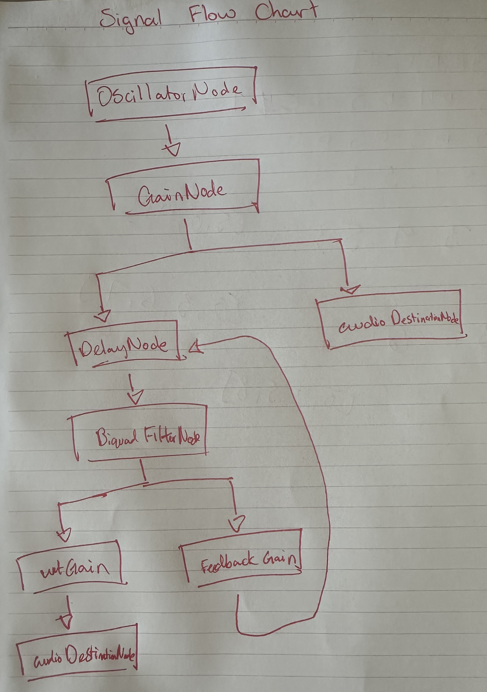

before my fun sound you can hear the coded “babbling brook”: {RHPF.ar(LPF.ar(BrownNoise.ar(), 400), LPF.ar(BrownNoise.ar(), 14) * 400 + 500, 0.03, 0.1)}.play Basically, the way I saw this code is you have some brown noise which you gave us the code for is going through a LPF with a cut off of 400hz. Then that sound goes through a RHPF and the cut off fluctuates with the brown noise signal passed through lpf with a cut off of 14hz which has also been scaled and moved by the multiplication by 400 and addition of 500. Finally the RHPF has a rq of 0.03 and needs to be multiplied by 0.1
From farnell, I wanted to create the bouncing ball sound. I basically just followed the full implementation they layed out, but it kinda sounded like glass originally which I didnt mind, but I wanted it to be more goofy. I tried to change the frequencies and sine type but it just didn't sound how I liked and I kinda loved the glass ish sound.
So I went with the glass sound and changed the frequencies to be higher and sweep across a slightly larger range, then changed osc to square which makes it sound more like glass marble on like ceramic or something, then I added an echo with a lpf to spice it up :)))
In terms of what types of synthesis I used, since I used an envelope on the bounce sound over time I guess that's technically subtractive synthesis, and since I changed the frequency as it swept that's FM. These work together well to create the marble sound because both of them interact to simulate the way gravity works on a marble and how the frequency is gonna be higher initially on the first contact with the ground, then go down as it starts to have potential energy from its max height going down etc etc. The envelope also simulates the way a marble would slowly come to a stop and how the force it hits the ground with goes down over time.
